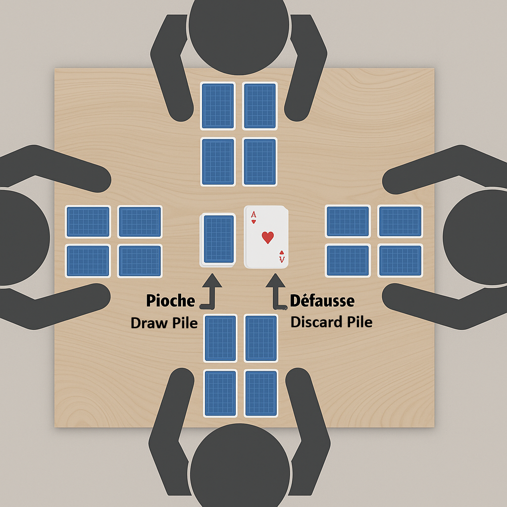

Cartes Pièges - Règles du jeu
🧩 Matériel nécessaire
Un jeu de 52 cartes classiques (sans les jokers ou pas).
Jouable de 2 à 8 joueurs.
🌟 But du jeu
Faire le moins de points possible. Si un joueur atteint exactement 100 points, il redescend à 50. S'il dépasse 100 points, il est éliminé. Le dernier joueur restant ou celui ayant le plus petit score remporte la partie.
🃎 Mise en place
Un joueur mélange les cartes et distribue 4 cartes face cachée à chaque joueur. Chacun place ses 4 cartes devant lui en carré, sans les regarder.
Chaque joueur peut ensuite regarder secrètement 2 de ses cartes, une seule fois, avant le début de la partie. Il doit les mémoriser puis les reposer à la même place, toujours face cachée. Ces cartes ne doivent pas être montrées aux autres joueurs.
Placez la pioche au centre de la table (face cachée), et retournez la première carte pour former la pile de défausse visible à côté.

🃏 Valeurs des cartes
- Roi rouge : 0 point
- Roi noir : 13 points
- Dame : 12 points – si posée sur la pile visible, permet de voir une carte
- Valet : 11 points – permet d’échanger deux cartes (sauf avec un joueur ayant dit "Stop")
- As : 1 point
- 2 à 10 : valeur nominale
- Joker : –1 point — un bonus rare si vous décidez d’inclure les jokers dans le jeu.
✨ Pouvoirs (en résumé)
- Dame : voir une carte cachée
- Valet : échanger deux cartes entre joueurs (sauf avec un joueur ayant dit "Stop")
✨ Variante des pouvoirs des cartes
Cette variante introduit de nouveaux pouvoirs attribués à certaines cartes. Elle peut remplacer ou compléter les règles de base ci-dessus.
- 7, 8 : Permet de regarder une de ses propres cartes face cachée, puis de la reposer au même endroit.
- 9, 10 : Permet de regarder une des cartes d’un adversaire, puis de la reposer à sa place.
- Valets, Dames : Échange à l’aveugle — échange de deux cartes au hasard entre deux joueurs (sans les regarder).
- Rois : Regarder et échanger — possibilité de regarder une carte au choix, puis de l’échanger (ou pas) avec une autre.
🛠️ Déroulement d'un tour
- Piocher une carte (pioche cachée ou pile visible) — vous pouvez regarder la carte que vous venez de piocher
- Échanger avec une de ses cartes ou la poser sur la pile (de défausse) visible
- Activer un pouvoir si c'est une Dame ou un Valet
- Si une de vos cartes correspond à celle visible, vous pouvez la défausser
- Dire "Stop" si vous pensez avoir le moins de points
🗣️ Dire "Stop"
Les autres joueurs jouent un dernier tour. Si le joueur qui a dit "Stop" a le plus petit score :
- ✅ Il a raison : -10 points
- ❌ Il a tort : +10 points
⚡ Défausse à la volée
Lorsqu'une carte est défaussée pendant un tour, tout autre joueur peut immédiatement défausser l'une de ses propres cartes si elle a la même valeur.
- Si la carte est correcte : elle est retirée du jeu.
- Si la carte est incorrecte : le joueur reprend la carte et pioche une carte de pénalité sans la regarder.
🔎 Défausse par un autre joueur
Si vous avez vu ou mémorisé une carte appartenant à un autre joueur (via une Dame, une erreur ou un échange ou autre), et que ce joueur ne la défausse pas alors qu’il le pourrait, vous pouvez le faire à sa place.
- Si c'est correct : la carte est défaussée, et le joueur concerné pioche une carte de pénalité.
- Si c’est incorrect : vous piochez une carte de pénalité.
📈 Comptage des points (fin de manche)
- Révéler ses cartes
- Additionner les valeurs
- Plus de 100 : éliminé / Pile 100 : retour à 50
- Appliquer bonus/malus du "Stop"
Exemple (fin de 1ère manche) :
Alice : 2, 7, Dame, Roi rouge = 21 (a dit "Stop" et a eu raison) → 11 points
Bob : Valet, 3, 4, 5 = 23 points
Carla : Roi noir, 2, 9, 4 = 28 points